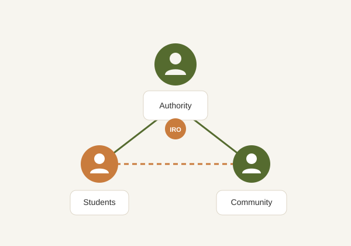

IRO is a web-based prototype designed to provide a centralized platform where AAUA students and members of the host communities can report issues, monitor complaint progress and encourage effective communication with the appropriate authorities.

The Issues Reporting Outlet (IRO) was developed as a university project to address the absence of a unified reporting platform for community-related and student-related issues around Adekunle Ajasin University, Akungba-Akoko.
The platform allows users to submit reports, receive a unique Complaint ID and monitor the status of their complaints through a simple tracking interface.
The major objectives of the system include the following.
Provide one platform where students and community members can report issues.
Enable users to monitor the progress of submitted reports using a Complaint ID.
Encourage faster response and better communication between stakeholders.
The IRO platform is designed to serve different groups within the university community and the host environment.
Report issues affecting academic activities, accommodation, security and general welfare.
Report environmental, infrastructural and community-related concerns affecting residents.
Receive reports, review complaints and monitor the progress of reported issues.
Submit complaints using a simple and responsive web interface.
Monitor the current status of reports using a unique Complaint ID.
Accessible on desktop computers, tablets and mobile devices.
Project Title: Issues Reporting Outlet (IRO)
Institution: Adekunle Ajasin University, Akungba-Akoko
Department: Computer Science
Project Type: Academic Mini Web Application Prototype
Technologies Used: HTML5, CSS3 and JavaScript
Submit a report or monitor an existing complaint through the Issues Reporting Outlet platform.